FOX 9 · 2025
Trading their sleighs for bikes
News coverage of the Minneapolis ride.
Twin Cities Santa Cycle Rampage · Media resources
Every December, a sea of Santas takes over the streets of Minneapolis, not in sleighs, but on bicycles.
178 riders in 2025. Santa suits, festive misfits, decorated bikes and a city full of cheer.
In 2013, Brent called up a couple of friends, and ten Santas rode that first year.
At a glance
How to refer to us: Twin Cities Santa Cycle Rampage; also Santa Cycle Rampage MSP.
For introductions and listings
Twin Cities Santa Cycle Rampage is an annual holiday bicycle ride through Minneapolis. Riders dress as Santa or other festive characters, decorate their bikes, visit local breweries, bring toys to donate and spread cheer across the city.
Ready for the headline
Nearly 200 costumed riders take to Minneapolis streets in the middle of a Minnesota winter.
How a small ride among friends grew into a Minneapolis holiday tradition. A tradition grows up with its riders. More than a decade later, longtime riders still come back, and some now bring their kids.
Riders carry toys on their bikes to donate to kids in need.
A brewery-to-brewery bike ride celebrating Minneapolis taprooms and local craft beer.
The Santa Rampage started with San Francisco pranksters, turned into SantaCon, and ended up on bicycles in Minneapolis.
Read the full story ↗Prank the system.
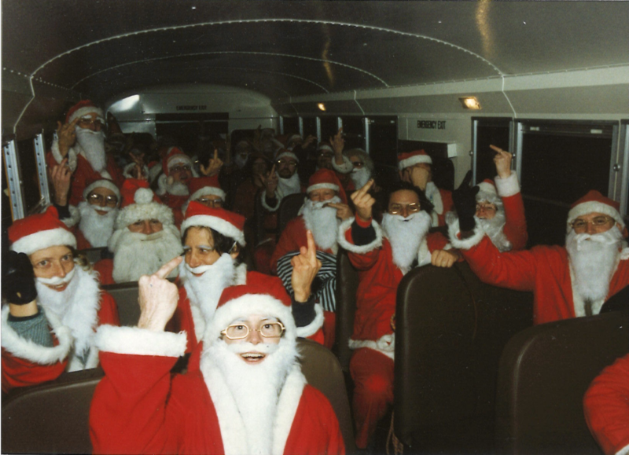
Party in the suit.
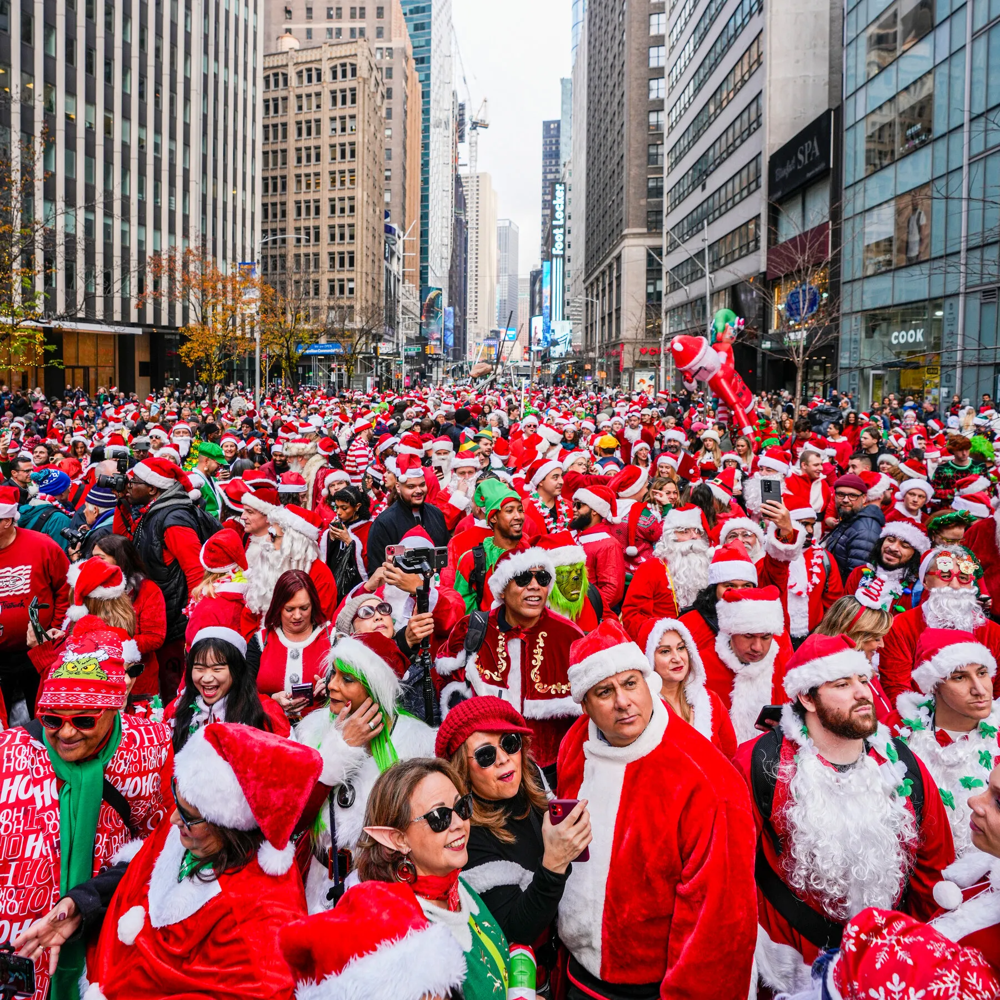
Fight sadness with joy.
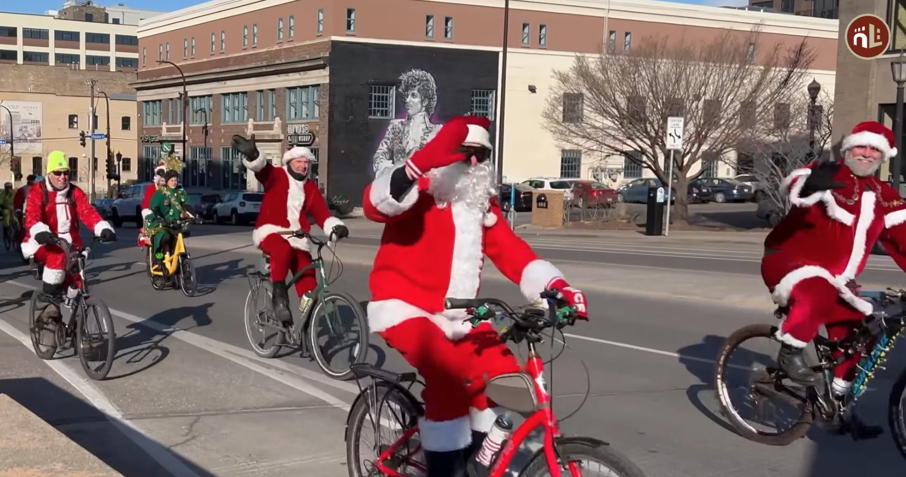
“In a weary world, kindness is its own kind of rebellion.”
The bikes, the costumes, the crowd and the people who started it.
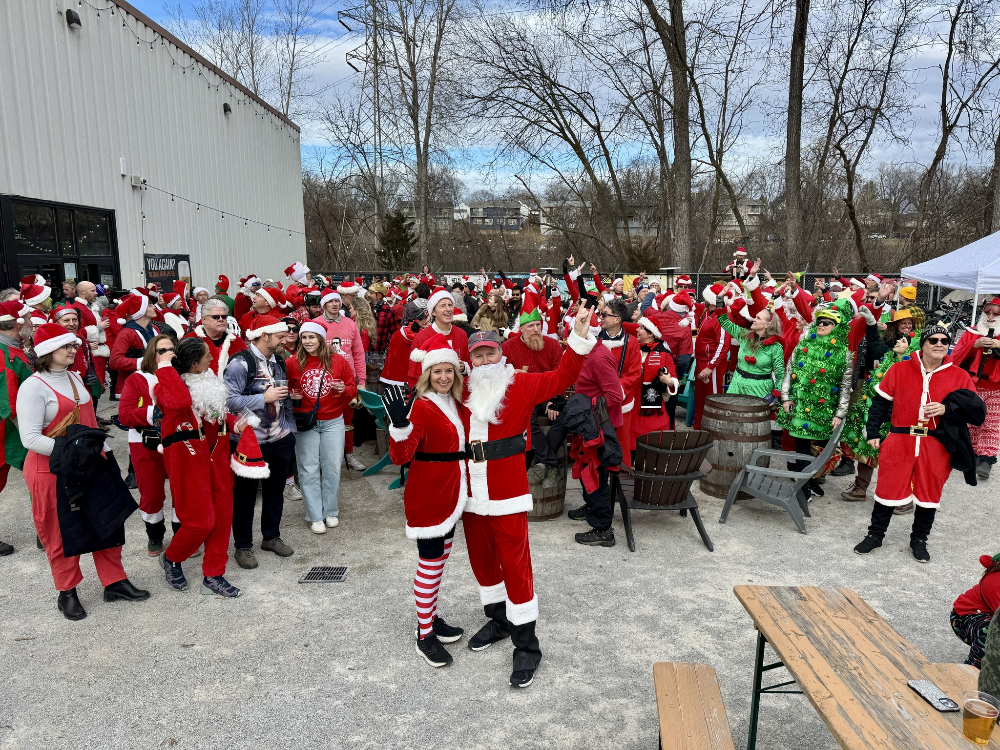
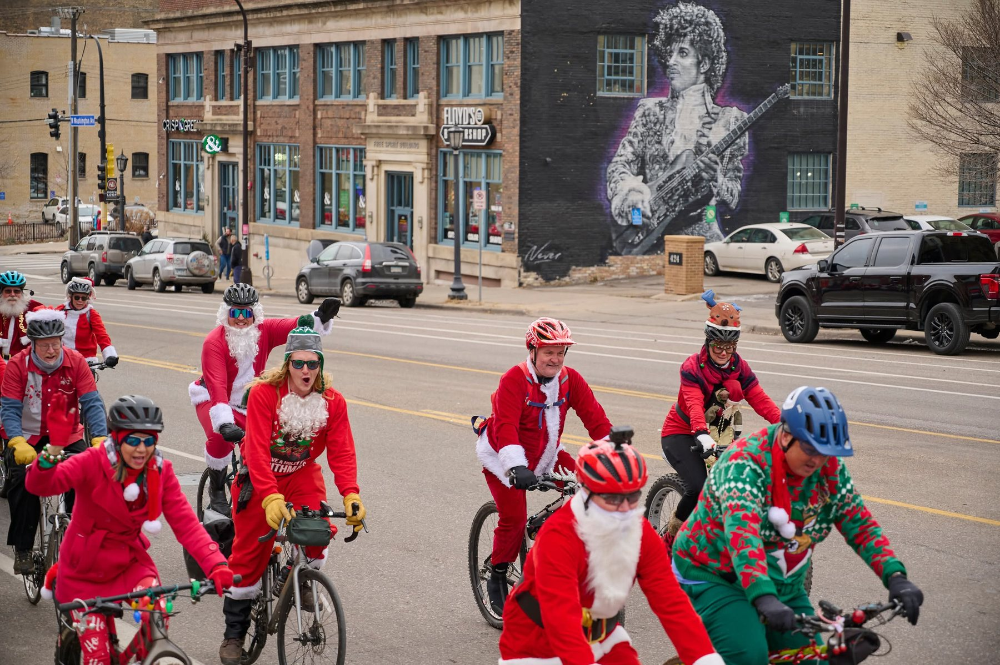
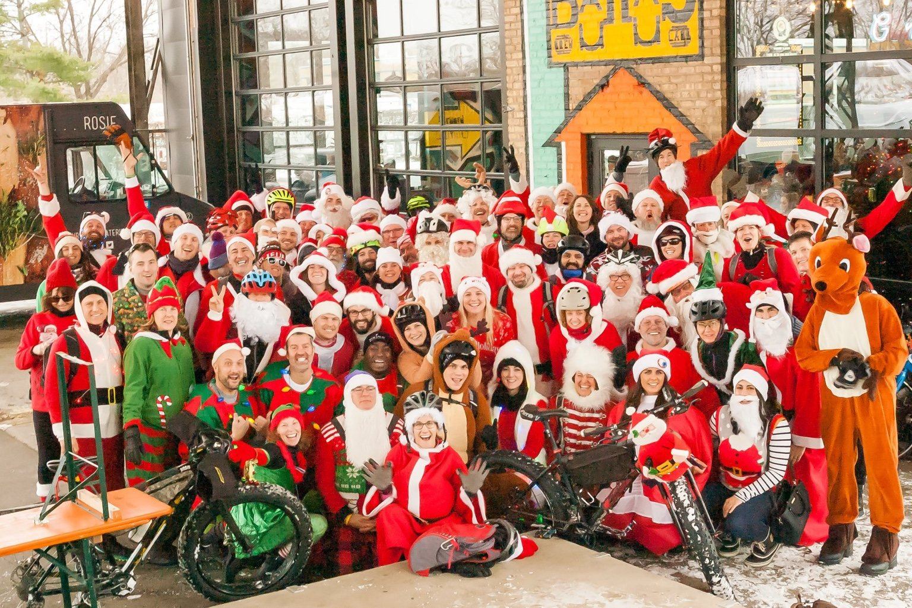
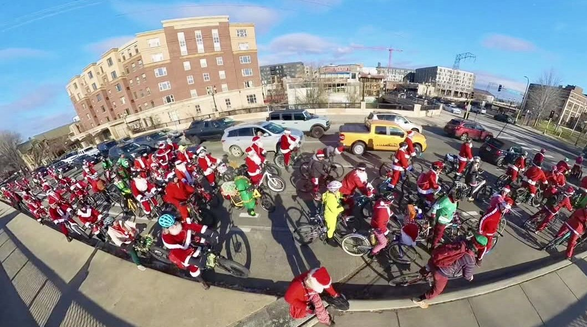
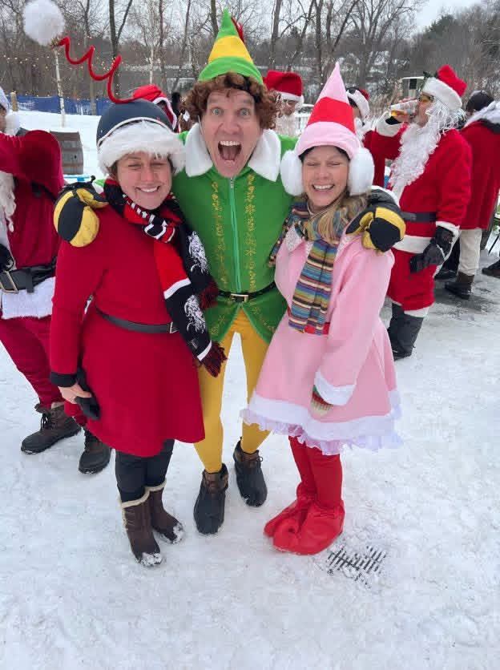
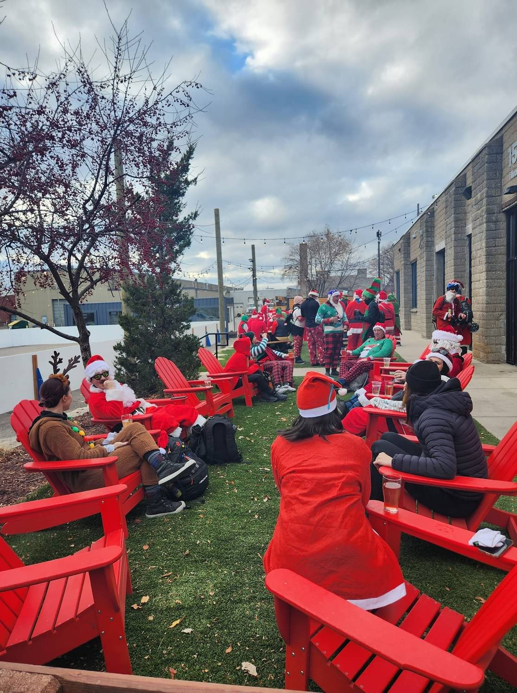
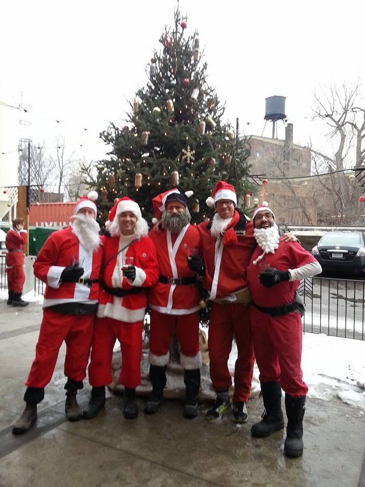
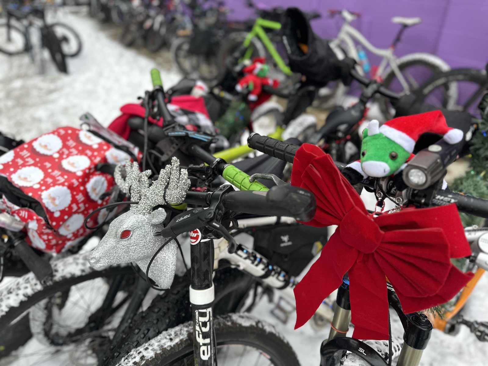
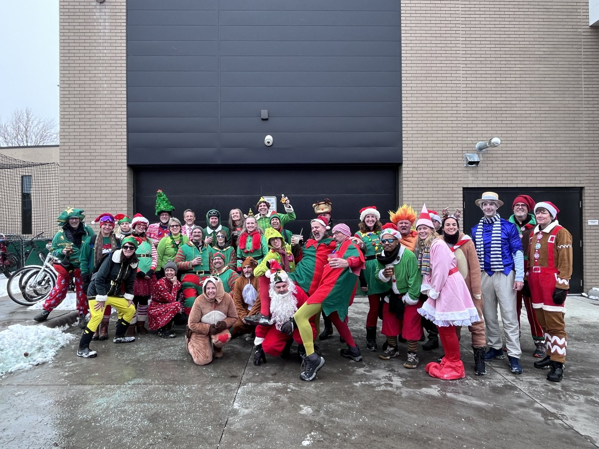
Credits are shown with each image. For publication permission or licensing questions, contact Joel Lueders.
Santas on Minneapolis streets, costumed riders, snowy group cheers and the pack rolling together.
9.5-second silent website preview.
Footage: North Loop Neighborhood News
8-second silent website preview.
A 20-second street-side view of the 2025 procession. A shorter, full-quality cut is in the vertical B-roll download.
Footage: Santa Cycle Rampage MSP collection
Buddy the Elf raises a glass before the camera pulls back to the snowy crowd. The full-quality clip is in the vertical B-roll download.
Footage: Vitaly Katasonov
Together, the downloads include nine labeled 2025 clips totaling about 3 minutes 9 seconds. News broadcasts are excluded. Credit Vitaly Katasonov for the 360-camera footage. Contact us for original source footage and other attribution details.
A 32-second, lower-resolution look at the riders passing this Minneapolis landmark. This clip is separate from the downloadable B-roll packages.
Download the logo with the event name in a horizontal or stacked layout. Transparent PNGs work on your own background; cream-background versions match the website.
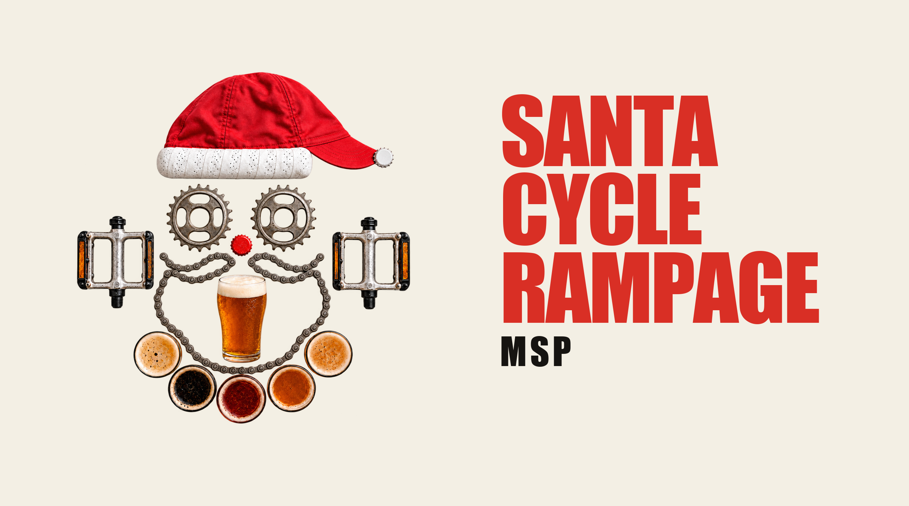
News coverage of the Minneapolis ride.
News coverage of the Minneapolis ride.
Broadcast clips and linked coverage are for viewing here. Publisher footage is not included in the downloadable B-roll library.
Last updated:
Interviews, photos, footage
Joel Lueders
For interviews, original files, credits or publication permission, email us.
santacyclerampagemsp@gmail.com ↗